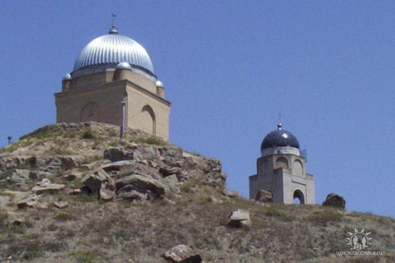

“The City of Merchants” –
this is how Taraz was called for a long time – this capital center of the Türgesh, and then the Karluks and Karakhanids.
This land has preserved traces of citadels, caravanserais, adobe huts of commoners, duvals and deaf courtyards, craft workshops.
Taraz is one of the oldest cities in Kazakhstan, known already in the 6th century.
Taraz reached its peak of development in the 10th-12th centuries, when it became known as the capital of the Karakhanid state. In 1220, Taraz was besieged by the troops of Genghis Khan and completely destroyed.
At the end of the 18th century, life arose again near its ruins - a fortress was built, the city began to develop rapidly.
| Not far from one of the oldest cities in Kazakhstan - Taraz - hides a small village called Aisha-Bibi. Here is the most beautiful mausoleum of the same name - the tomb of Aisha-Bibi. The mausoleum of Aisha-Bibi is a well-known historical architectural monument of republican significance. The tomb was built nine centuries ago, in the 11th-12th centuries AD. An old steppe legend about love and death is closely connected with the mausoleum. | |
| Mausoleum of Babadzhi Khatun is a landmark located in the village of Aisha-bibi, Zhambyl district, Zhambyl region of Kazakhstan, 18 km from the ancient city of Kazakhstan - Taraz, whose history goes back more than 2 thousand years. The legend about the construction of the mausoleum of Babaji Khatun is closely connected with the beautiful Kazakh legend about the love of a beautiful young girl named Aisha Bibi and the ruler of the city of Taraz, Karakhan Muhammad. According to legend, Babaji Khatun was the nanny and faithful friend of Aisha Bibi. | |
| The Mausoleum of Karakhan (mausoleum of Aulie-ata or Auli-ata) is a well-known historical and architectural monument in Taraz, built in the 11th century AD. The building was erected over the burial place of the first khan, a representative of the Karakhanid dynasty. The mausoleum of Karakhan, together with other famous buildings of the city - the mausoleum of Aisha-Bibi and the mausoleum of Babaji Khatun, is included in the cult-memorial complex of the Museum-Reserve "Monuments of ancient Taraz", located on the territory of the medieval settlement. | |
| An architectural monument of the XIV-XV centuries, located on the southeastern outskirts of the city of Taraz on the right bank of the Talas River on top of the Tekturmas hill. The architect and builder of the mausoleum are unknown. Among the locals, the mausoleum is considered the burial place of the holy Sultan Mahmud Khan. This place is usually described as a "cult" and "mystical" place, a "place of power", "a mysterious place of pilgrimage". The mausoleum of Sultan Mahmudkhan was built in the 14th century. According to one version, this man was a commander in the state of the Karakhanids. |  |